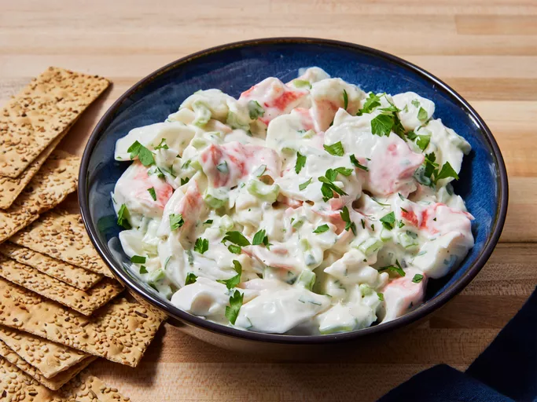

Crab Salad

Description
Making crab salad at home couldn’t be easier. You'll find a detailed ingredient list and step-by-step
instructions in the recipe below, but let's go over the basics
Crab Salad Ingredients
- Imitation crab meat: This recipe starts with a pound of imitation crab meat.
- Celery: Finely chopped celery lends flavor and texture.
- Dressing and mayonnaise: A combination of mayonnaise and reduced-fat ranch dressing ensures
a flavorful, creamy result.
- Sugar: White sugar adds subtle sweetness.
- Parsley: Minced fresh parsley gives the crab salad a bright pop of color and flavor.